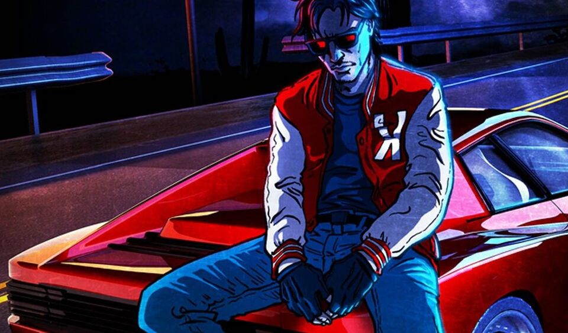
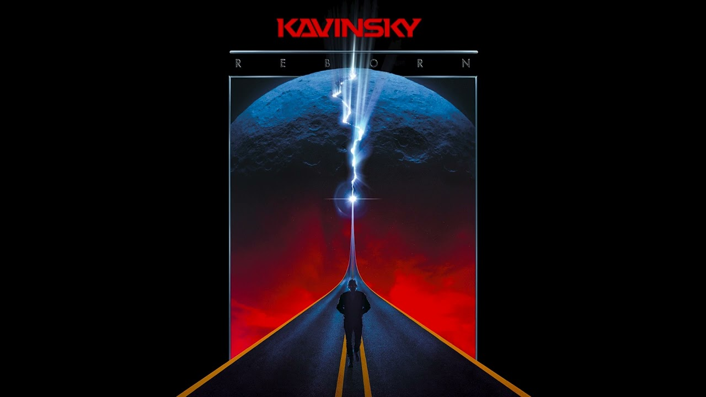

“Nightcall†by Kavinsky, released in 2010 and made famous by the soundtrack to the film “Drive”, embodies a nocturnal and futuristic atmosphere, mixing retro synthwave and modern electro. The song, with its synthetic sounds and its dark atmosphere, evokes a cybernetic and urban aesthetic, often associated with futuristic visions of the 1980s. Kavinsky's robotic voice in the song reinforces this idea of ​​dialogue between human and machine, symbolizing the emergence of a technological future where artificiality and emotion mingle.
“Nightcall†perfectly captures the essence of a dreamed future through a retro-futuristic aesthetic, where sounds evoke both nostalgia and anticipation of a changing world. The sound ambiance of the piece, melancholy but full of energy, could perfectly accompany a concept car gliding through a futuristic city, under bright neon lights, in a world where technology dictates the rhythm.

The song “Nightcall†fits into the theme of “Prehistory of the Future†by playing on a similar idea of ​​transition between the present and the future. Just like concept cars, such as the Audi RSQ from “I, Robot,†Kavinsky’s music anticipates a future that is both technological and emotional. The retro-futuristic style of “Nightcall”  reminds us that this future, although still to come, is inspired by past aspirations: a vision of a time when we dreamed of artificial intelligence, of autonomous cars, and a hyper-connected world. The melody itself, with its electro sounds and synthetic, seems to foreshadow the soundtrack of a future where machines and humans coexist.
In the same way that concept cars experiment with new technologies and new designs without yet being commercialized, “Nightcall†evokes a soundscape of a future that does not exist not yet but we can already see the beginnings of it. This music and concept cars share the same anticipatory status: they are not finished products, but creative experiments which build a bridge between imagination and innovation. In this sense, “Nightcall†can be considered as the soundtrack of this “prehistory of the future”, where we begin to hear and see the first manifestations of what tomorrow will be, whether in music or in technology.